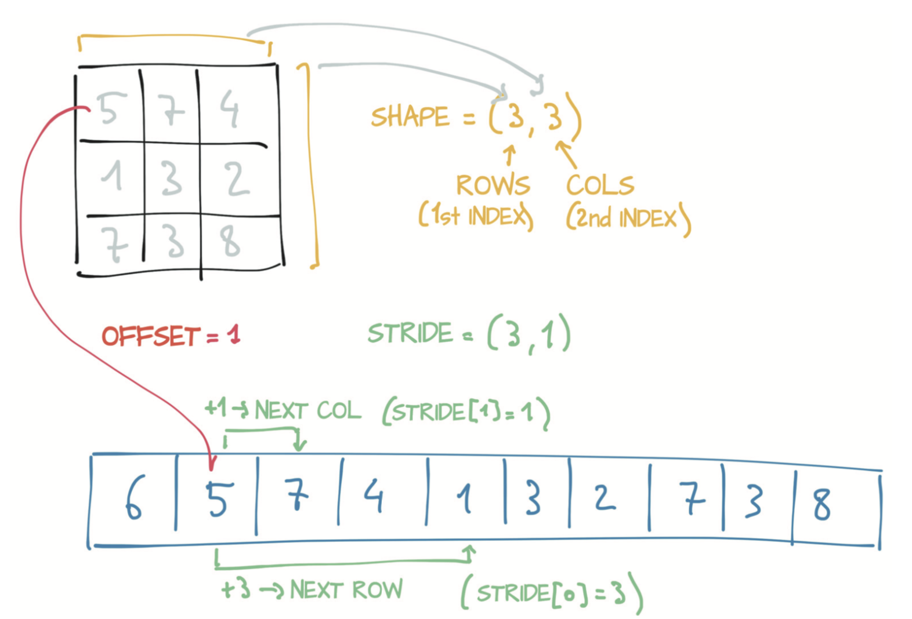
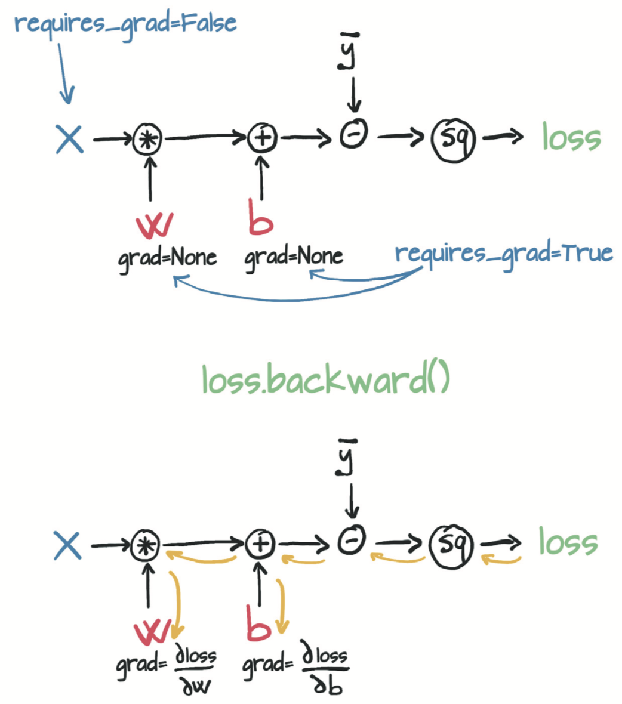
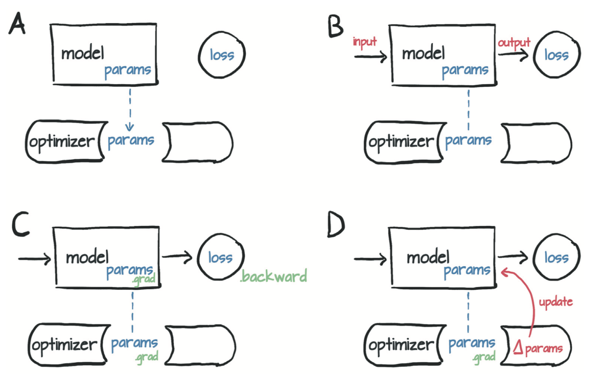
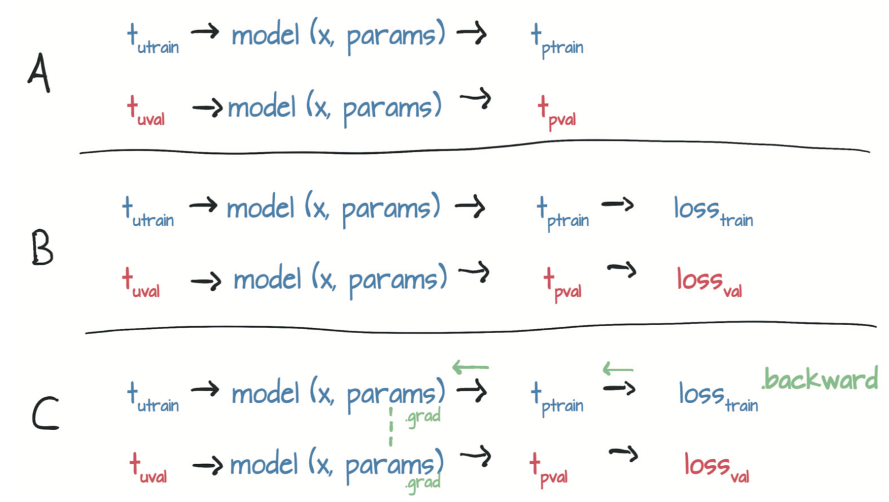

记录一下pytorch中需要复习的一些零碎知识点
从Tensor开始
Tensor的存储结构
python原本的存储是不连续，例如list中的每一个元素并不像c++中的数组是连续存放在内存中。而numpy与pytorch会将array以及tensor放置在连续内存单元里面，通过修改索引来构造各种维度
如图所示，与Tensor存储相关的有三个量，尺寸size、存储偏移offset以及步长stride（每一个维度的长度）。这种表示方式比较灵活，在进行reshape操作的时候只需要修改offset和stride即可，而不需要重新构造新的张量。

需要注意，直接使用等号将某一个张量A赋值给新的张量B，两者仍将指向同一段内存地址，修改B会反过来影响A。
元素的存储是逐行保留的
1 | Input: |
如果想避免这种情况，去创建一个新的Tensor独占空间，需要使用clone()函数
1 | Input: |
转置前后可以使用id()函数验证两者的内存空间一致, 但是转置之后的Tensor数据存放不再连续。
1 | id(points.storage()) == id(points_t.storage()) |
Tensor数据类型
- torch.float32或torch.float —— 32位浮点数
- torch.float64或torch.double —— 64位双精度浮点数
- torch.float16或torch.half —— 16位半精度浮点数
- torch.int8 —— 带符号8位整数
- torch.uint8 —— 无符号8位整数
- torch.int16或torch.short —— 带符号16位整数
- torch.int32或torch.int —— 带符号32位整数
- torch.int64或torch.long —— 带符号64位整数
使用dtype参数构造新Tensor1
2double_points = torch.ones(10, 2, dtype=torch.double)
short_points = torch.tensor([[1, 2], [3, 4]], dtype=torch.short)
Tensor元素的类型可以在创建时使用to()或者某种type的函数进行生成1
2
3
4
5double_points = torch.zeros(10, 2).double()
short_points = torch.ones(10, 2).short()
or
double_points = torch.zeros(10, 2).to(torch.double)
short_points = torch.ones(10, 2).to(dtype=torch.short)
任何时刻都可以使用type()，转换Tensor类型，注意type()是返回tensor而不是直接在调用对象上进行改变，因此想改变某个tensor的类型，需要进行赋值操作，即1
2a = a.type(torch.float)
a = a.to(torch.int8)
与Numpy互通
1 | tensor --> numpy |
当Tensor的设备为cpu的时候，numpy数组和tensor直接共用数据缓冲区，修改任何一个都会影响另一个，而当Tensor的设备为GPU的时候，numpy数组会从显存被拷贝至内存区中
保存与读取Tensor
1 | torch.save(points, '../../data/chapter2/ourpoints.t') |
让Tensor运行在GPU上
device概念：是Tensor的属性之一，指在设置计算机上放张量（tensor）数据的位置
可以在创建tensor的时候就指定设备1
points_gpu = torch.tensor([[1.0, 4.0], [2.0, 1.0], [3.0, 4.0]], device='cuda')
也可以使用to()方法把tensor从CPU的内存拷贝到GPU的显存1
points_gpu = points.to(device='cuda')
放置到显存后，变量的类型也会发生一些改变，变成了有cuda关键词的类型’torch.cuda.FloatTensor’
张量的API
一般来说torch.method(tensor,para)和tensor.method(para)是没什么区别的，但是部分方法只有tensor才具备，这部分方法的后缀是下划线，代表原地inplace操作
view()和reshape()的区别：
- view()只能作用于连续存储的Tensor上，对一些存储不连续的张量例如转置后的，view()无法执行
- reshape()可以作用于连续或非连续的Tensor上，对连续存储的与view()完全一致，非连续存储的相当于contiguous()+view()，得到的是原存储空间的拷贝，也就是说修改拷贝不会影响原张量
使用张量表示真实数据
表格数据
表格数据的读取，通常有三种方式
- python自带的csv模块
- numpy
- pandas
对于结构化的数据而言，pandas最好，但是考虑到numpy与pytorch天生的内源性适配，这里更推荐使用numpy进行读取
以红酒品质的数据作为练习来源1
2
3
4
5
6
7
8
9
10
11
12
13
14
15
16
17
18
19
20
21import csv
import numpy as np
import torch
wine_path = './winequality-white.csv'
wine_numpy = np.loadtxt(wine_path, delimiter=';',dtype=np.float32,skiprows=1)
print(wine_numpy.shape)
col_list = next(csv.reader(open(wine_path),delimiter=';'))
print(col_list)
data = torch.from_numpy(wine_numpy[:,:-1])
target = torch.from_numpy(wine_numpy[:,-1]).long()
print(data.shape,target.shape)
output:
(4898, 12)
['fixed acidity', 'volatile acidity', 'citric acid', 'residual sugar', 'chlorides', 'free sulfur dioxide', 'total sulfur dioxide', 'density', 'pH', 'sulphates', 'alcohol', 'quality']
(4898, 11) (4898,)
对target可以进行onehot编码，使用torch的scatter_原地方法，前提是target的dtype为int64（long）
target_onehot = torch.zeros(target.shape[0],10)
target_onehot.scatter_(1,target.unsqueeze(1),1.0)
时间序列数据
与表格数据类似，只是需要使用view()对维度进行转换，可能会将不同的通道作为天数，每一行作为每小时或者每分钟数据，使得其成为具有时间序列的多维数据
文本数据
应用与NLP问题中。对字符串进行编码，可以从词的级别进行编码，one-hot方式面对巨大数量的词的时候是很崩溃的，类别过于大了。
使用文本嵌入embedding的方式可以解决这个问题，基本思路是通过张量中元素的组合来表示语义，类似于“红色+甜+球形=苹果”这种企业级理解方式，属于一种比较特殊的编码方式吧，对于人工编码来说也需要很大的工作量。
应该还有更有效率的编码方式，这里没有详谈。
图像数据
使用imageio模块加载图像
默认读入的numpy array维度是（width height channel），而torch一般处理时愿意将其变为（channel height width）因此需要进行一个转置transpose()
1 | import imageio |
注意：不加clone的话转置计算代价比较小，但是会让img和out共享内存，这个取舍由coder自己把握
上述的是一张图片的读取，对于图像数据集来说，一般会有一沓图片等着你读取，这时候使用batch堆叠的方法，将多张图片放到一起比较好。
1 | import os |
体积volume数据
在通道（channel）维之后，你有一个额外的维——深度（depth），形成5D张量为N x C x D x H x W
使用imageio模块中的volread函数加载一个CT扫描样本，该函数以文件夹作为参数，将所有DICOM（Digital Imaging Communication and Storage，数字图像通信和存储）系列文件组合成一个NumPy 3D数组中1
2
3
4import imageio
dir_path = "../../data/chapter3/volumetric-dicom/2-LUNG 3.0 B70f-04083"
vol_arr = imageio.volread(dir_path, 'DICOM')
vol_arr.shape
学习机制
开普勒在没有计算机、微型计算器甚至微积分（那时这些都还没被发明出来的）的情况下估算了椭圆的偏心率和尺寸，提出了开普勒三定律。
这是早期通过输入输出参数来拟合模型的重要例子，某种程度上来说，机器从数据集中构建模型的思路完全可以参照多普勒当年的想法和流程。
本质上，开普勒必须使用一定数量的观测值来计算出曲线以尝试不同形状，然后使用计算出的曲线估计出更多位置，这是他拥有观测值的时间。然后检查这些计算出的位置是否与观测到的位置一致。
- 从他的朋友Brahe那里得到了很多好的数据（费了一些周折）。
- 试图将这些数据可视化，因为他觉得有的（数据）有些可疑。
- 选择有可能拟合数据的最简单的模型（椭圆）。
- 划分数据，以便处理部分数据并保留独立的数据集用来验证。
- 从试探性的偏心率和大小开始，然后进行迭代直到模型拟合观察结果为止。
- 根据独立的数据集验证他的模型。
- 难以置信地回顾。
科学的历史是建立在这七个步骤之上的
让autograd帮你计算梯度
1 | def model(t_u, w, b): |

1 | if params.grad is not None: |
WARNING: grad会在每一个tensor处累积而非储存，也意味着每次计算完成需要将grad清零
1 | def training_loop(n_epochs, learning_rate, params, t_u, t_c): |
detach() 非常关键，不然每一次更新参数都会导致一直追踪到最原始的params
我们重构params参数更新行：p1 = (p0 lr p0.grad)。这里p0是用于初始化模型的随机权重，p0.grad是通过损失函数根据p0和训练数据计算出来的。
到目前为止，一切都很好。现在，你需要进行第二次迭代：p2 = (p1 lr p1.grad)。如你所见，p1的计算图会追踪到p0，这是有问题的，因为(a)你需要将p0保留在内存中（直到训练完成），并且(b)在反向传播时不知道应该如何分配误差。
相反，应该通过调用.detatch()将新的params张量从与其更新表达式关联的计算图中分离出来。这样，params就会丢失关于生成它的相关运算的记忆。然后，你可以调用.requiresgrad()，这是一个就地（in place）操作（注意下标“_”），以重新启用张量的自动求导。现在，你可以释放旧版本params所占用的内存，并且只需通过当前权重进行反向传播。
优化器

在每个optim初始化的时候，输入optim关注的tensor
每个优化器的输入都是params或者说具有grad的张量，优化器含有zero_grad()和step()两个基本的方法
当输入的params有梯度属性后，调用optim.step()即可完成参数的更新
千万记住要在backward()之前调用optim.zero_grad(),将所有传递给优化器的Tensor的梯度清零1
2
3
4
5
6
7
8params = torch.tensor([1.0, 0.0], requires_grad=True)
learning_rate = 1e-2
optimizer = optim.SGD([params], lr=learning_rate)
t_p = model(t_un, *params)
loss = loss_fn(t_p, t_c)
optimizer.zero_grad() # 此调用可以在循环中更早的位置
loss.backward()
optimizer.step()
torch.randperm(int max)可以生成随机的index，范围为(0, max-1)
不需要时关闭autograd
还有一个点需要讨论：因为你永远不会对val_loss调用backward，所以为什么要构建图形？实际上，此时你完全可以将model和loss_fn当作普通函数而无需追踪计算历史。无论经过怎样的优化，追踪计算历史都会带来额外的代价，所以你应该在验证过程中避免这些代价，尤其是当模型具有数百万个参数时

只使用train_loss更新params的梯度，不能使用valid_loss更新，否则就是在params中存储了这两者的梯度和，相当于把valid验证集也拿来做训练了
1 | def training_loop(n_epochs, optimizer, params, |
构建网络模型
torch.nn
PyTorch有一个专门用于神经网络的完整子模块：torch.nn。该子模块包含创建各种神经网络体系结构所需的构建块。这些构建块在PyTorch术语中称为module（模块），在其他框架中称为layer（层）。
PyTorch模块都是从基类nn.Module继承而来的Python类。模块可以具有一个或多个参数（Parameter）实例作为属性，这些参数就是在训练过程中需要优化的张量（在之前的线性模型中即w和b）。模块还可以具有一个或多个子模块（nn.Module的子类）属性，并且也可以追踪其参数。
nn.module中含有forward()函数，是实现前向计算的函数，但是pytorch官方不建议直接调用forward函数，因为在model(x)这种操作中，不仅有forward(x)，还有一系列重要的操作，例如我不明白的hook()函数
1 | y = model(x) # right |
如上所示，如果直接使用.forward（…），很多hook将无法正确调用。
nn.Module的子类都默认输入张量的第一维度为Batchsize
nn提供了一种通过nn.Sequential容器串联模块的简单方法：1
2
3
4
5
6
7seq_model = nn.Sequential(
nn.Linear(1, 13),
nn.Tanh(),
nn.Linear(13, 1))
# 先创建一个空的sequential 再去add module
seq_model.add_module('name',nn.Linear(3,1))
nn的子类
nn.Sequential在处理更大的网络时有点不够灵活（例如无法控制网络流向），使用nn.Module的子类更为合理1
2
3
4
5
6
7
8
9
10
11
12
13class SubclassModel(nn.Module):
def __init__(self):
super().__init__()
self.hidden_linear = nn.Linear(1, 13)
self.hidden_activation = nn.Tanh()
self.output_linear = nn.Linear(13, 1)
def forward(self, input):
hidden_t = self.hidden_linear(input)
activated_t = self.hidden_activation(hidden_t)
output_t = self.output_linear(activated_t)
return output_t
subclass_model = SubclassModel()
当子模块作为self.attri属性加入子类后，会自动登记为子模块，类会自动访问子模块的参数
回顾SubclassModel类的实现，并考虑在构造函数中登记子模块以便访问其参数的实用功能，似乎同时登记没有参数的子模块（如nn.Tanh）有点浪费，直接在forward函数中调用它们难道不是更容易吗？当然可以。
PyTorch的每个nn模块都有相应的函数。“函数”一词是指“没有内部状态”或“其输出值完全由输入的参数决定”。实际上，torch.nn.functional提供了许多与nn模块对应的函数，只是所有模型参数（parameter）都作为了参数（argument）移到了函数调用中。例如，与nn.Linear对应的是nn.functional.linear，它是一个具有参数(input, weight, bias=None)的函数，即模型的权重和偏差是该函数的参数。
可以不添加module，直接在forward中直接调用函数
1 |
|
WARNING:尽管1.0版的torch.nn.function中仍存在诸如tanh之类的通用科学函数，但不建议使用这些API，而应使用顶级torch命名空间中的API，例如torch.tanh。更多其他函数保留在torch.nn.functional中。